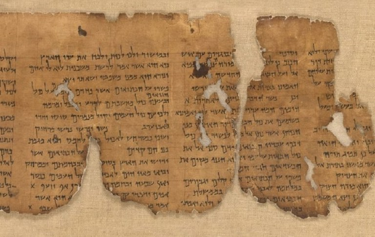

Etapas Importantes da Formação Bíblica
Antigo Testamento
Formação dos textos hebraicos, tradições orais e registros proféticos.
Período Intertestamentário
Tradução da Septuaginta e desenvolvimento cultural judaico.
Novo Testamento
Evangelhos, cartas apostólicas e a expansão da igreja primitiva.
Manuscritos Importantes
- Papiro Chester Beatty
- Códice Sinaítico
- Códice Vaticano
- Manuscritos do Mar Morto
Tabela Histórica
| Período | Data | Descrição |
|---|---|---|
| Patriarcal | 2000–1500 a.C. | Tradições e relatos antigos. |
| Profetas | 900–400 a.C. | Escritos proféticos e históricos. |
| Evangelhos | 50–90 d.C. | Vida e ensinamentos de Jesus. |
| Cartas | 50–100 d.C. | Doutrina cristã inicial. |
